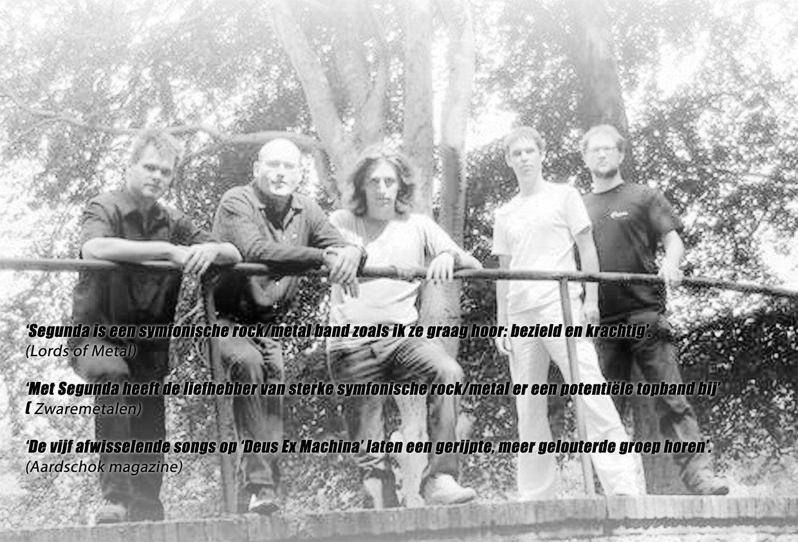

Segunda is a Dutch symphonic prog/metal band that has been around for ten years. In the course of those years the music of Segunda has evolved into a unique and original style. The basis for our music lies in the strong vocals of singer Mark Volmer. The songs are based upon big heavy guitarriffs that combine beautifully with bombastic synths. The songs are balanced out with more spherical passages and counterpoint melodies.
The year 2003 was marked by some changes in personell. After teaming up with a new bass player and a new drummer segunda worked on an almost entirely new set. This has resulted in our EP's “Mirror” that was recorded in the summer of 2004. Mirror was well received by press and audience. Our new EP "Deus Ex Machina" saw the lifelight early 2008 and is now available. Segunda is busy promoting the new material and hopefully we will see you all at a venue near you sometime soon!!!
Segunda is:
- BJ Hobbeling
- drums, backing vocals
- Menno Thomas
- bass guitar
- Joost Schrijver
- keyboards, piano
- Mark Visser
- guitars, backing vocals
- Mark Volmer
- Vocals
